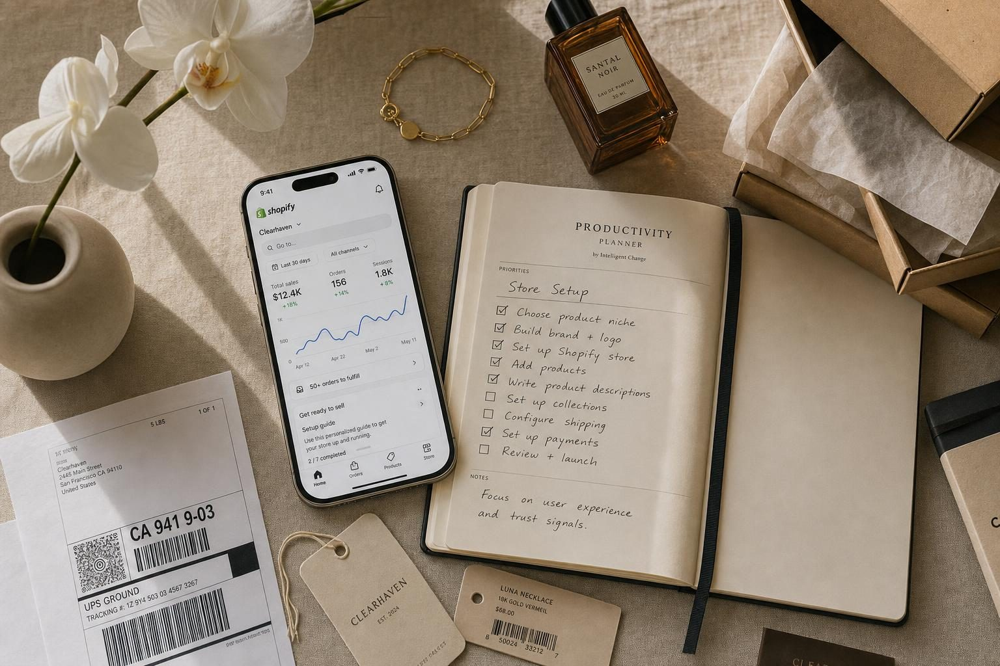
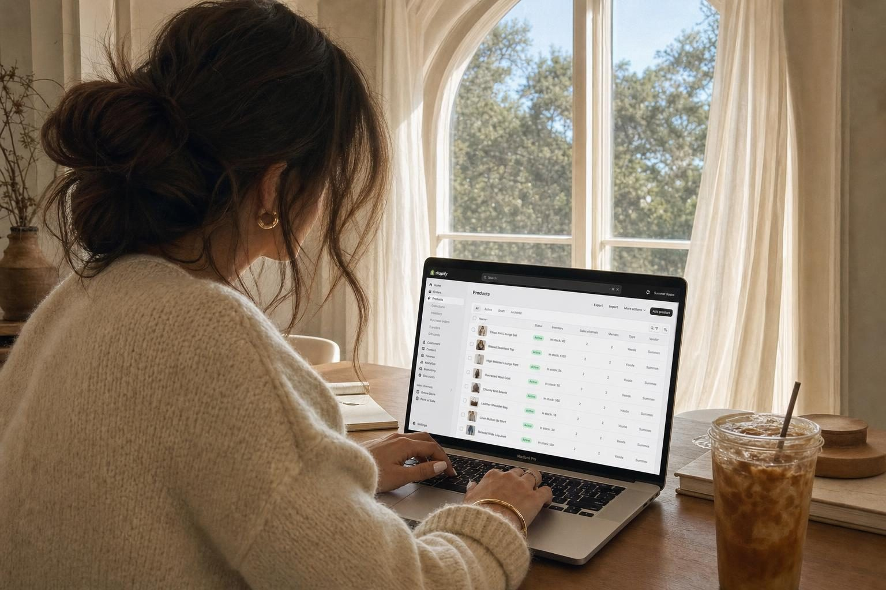
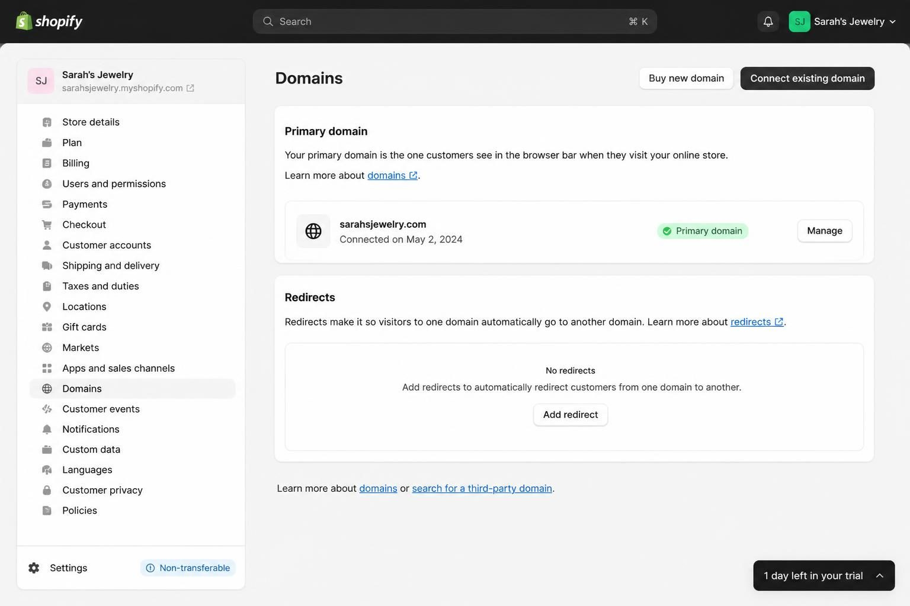
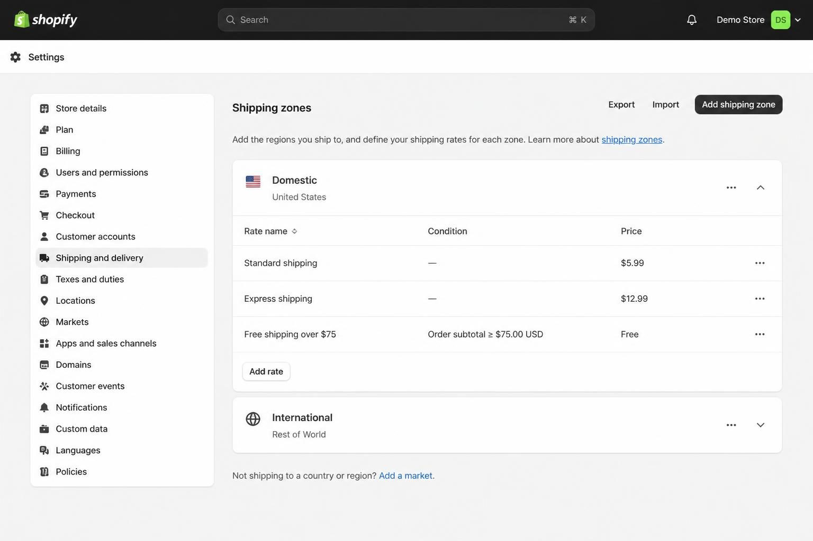
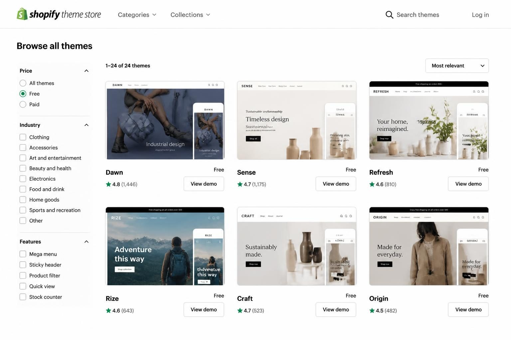
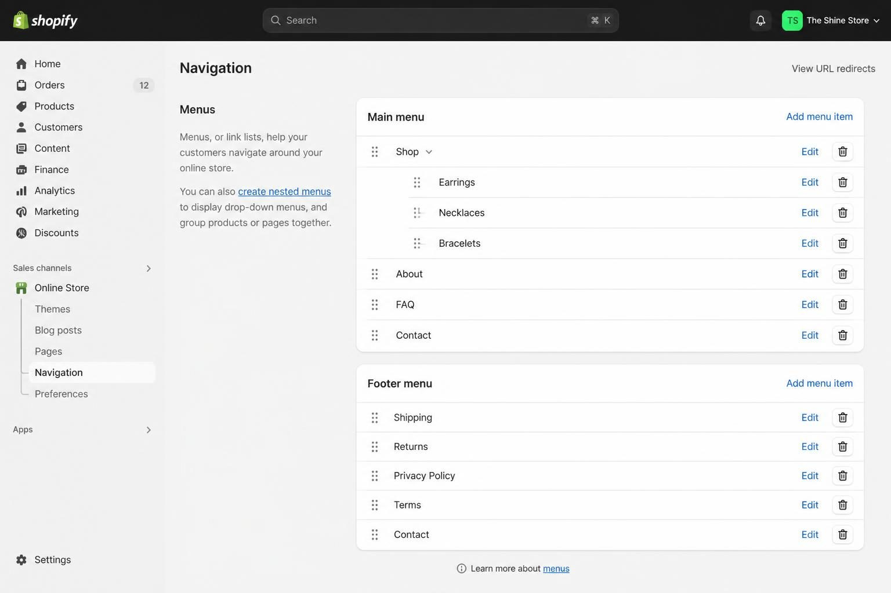

HOW TO SET UP SHOPIFY STORE: THE COMPLETE GUIDE FOR PRODUCT SELLERS IN 2026


Setting up a Shopify store takes most product sellers about one week if you follow a focused checklist - longer if you get distracted by apps, themes, and features you don't actually need yet. The fastest path is to handle your foundation settings first (payment, shipping, taxes), then add products with strong photos and descriptions, then worry about everything else.
I've watched too many small business owners spend three weeks tweaking their homepage banner color while their shipping zones aren't even configured. Or install twelve apps before adding a single product. The store setup process has a specific order that makes sense - and when you skip ahead or get sidetracked, everything takes longer than it should.
Here's what this post covers: the actual step-by-step setup process from day one through launch day, the settings most tutorials skip that will cost you money later, the photography and description basics that do 80% of your selling work, and the mistakes I see product sellers make constantly. Whether you're selling handmade jewelry, curated home goods, print-on-demand shirts, or wholesale products you've sourced - this is the practical guide that assumes you want to launch and start selling, not tinker forever.
Shopify now powers over 5.6 million active stores and holds roughly 30% of the US ecommerce platform market. The platform works. Your job is to set it up correctly from the start.
YOUR FIRST DAY: THE FOUNDATION SETTINGS MOST TUTORIALS RUSH PAST
Before you touch themes, products, or apps - handle the settings that affect every single transaction your store will ever process. These aren't exciting, but they matter more than your logo color.
Start your free trial and choose your plan wisely. Shopify gives you 3 days free without a credit card. The Basic plan at $39/month works for most new stores. Here's the math most tutorials skip: Basic charges 2.9% + 30¢ per transaction, while the Shopify plan ($105/month) charges 2.6% + 30¢. That 0.3% difference means you'd need to process around $22,000/month before the upgrade pays for itself. Start Basic unless you already know your volume justifies more.
Set your store location and currency immediately. This isn't just administrative - it determines your tax settings, which payment options appear, and where your shipping calculations originate from. Settings → Store details → Address. Get this right before anything else.
Connect or buy your custom domain now, not later. The free yourstore.myshopify.com subdomain makes you look like a hobby seller, not a real business. Budget $15-20/year for a proper domain. You can buy directly through Shopify (Settings → Domains → Buy new domain) or connect one you already own from GoDaddy or Namecheap. Do this on day one - not after your first sale.

Set up Shopify Payments before adding products. Settings → Payments → Complete Shopify Payments setup. You'll need your SSN (or EIN for businesses), bank account details, and basic business information. Shopify Payments gets you funds in 2-3 business days with no additional transaction fees beyond the standard rate. Third-party gateways like PayPal add roughly 2% on top of their own fees - so for most US sellers, Shopify Payments should be primary.
Quick note: If you're outside the US or Shopify Payments isn't available in your country, you'll need a third-party gateway. But for US-based sellers, there's no good reason to use anything else as your main payment method.
SHIPPING SETUP: WHERE MOST NEW STORE OWNERS LOSE MONEY OR GET COMPLETELY STUCK
Shipping configuration trips up more first-time sellers than any other part of Shopify. You have three main approaches, and you need to pick one deliberately - not just accept whatever defaults Shopify suggests.
Option 1: Flat rate shipping. You charge the same amount regardless of order size or weight. This works well for products that are similar in size and ship in standard packaging - like jewelry, small accessories, or lightweight items. Sarah, who makes resin earrings, charges flat $4.99 shipping because everything ships in padded envelopes via USPS First Class. Simple for customers, simple for her.
Option 2: Weight-based or price-based rates. You set tiers - orders under 1lb ship for $5, orders 1-3lb ship for $8, and so on. Maria, who sells curated home goods (candles, linens, ceramics), uses weight-based rates because a candle and a throw blanket have completely different shipping costs. She'd lose money on heavy items with flat rate.
Option 3: Calculated rates (carrier-integrated). Shopify pulls real-time rates from USPS, UPS, or DHL at checkout based on exact weight and destination. This is the most accurate but can scare customers if rates are higher than expected. Shopify Shipping offers carrier discounts up to 88% off retail rates - this is a significant advantage most tutorials don't emphasize enough.
To configure: Settings → Shipping and delivery. Create your Domestic zone first (your country), then decide on your rate structure. Add an International zone only if you actually want to ship globally - don't enable it "just in case" and then scramble when someone in Germany places an order.
The shipping mistake that kills profitability: Offering free shipping without building the cost into your product prices. If your product is $25 and shipping costs you $6, you need to either price at $31+ or accept that free shipping comes out of your margin. Do the math before you promise anything.

TAX SETTINGS: THE CONFIGURATION YOU MUST GET RIGHT BEFORE YOUR FIRST SALE
Tax setup isn't exciting, but getting it wrong means either overcharging customers or owing money you didn't collect. Neither outcome is good.
The basics work automatically. Shopify calculates and applies the correct sales tax rate for most US locations based on the customer's shipping address. Settings → Taxes and duties → United States → you'll see automatic tax calculation is enabled by default.
But you're responsible for understanding nexus. Nexus means you have a tax obligation in a particular state - either because you have physical presence there (you, your inventory, employees) or because you've hit an economic threshold (typically $100,000 in sales to that state). Shopify can calculate the tax, but you need to know which states you should be collecting for.
Here's what this looks like practically: If you're based in Texas and all your inventory ships from Texas, you definitely have nexus in Texas. If you sell $150,000 worth of products to California customers in a year, you've likely triggered economic nexus there too. Shopify will handle the calculation - but you need to enable collection for states where you have obligations.
Digital products and services have different rules. If you sell downloadable products or offer services alongside physical goods, the tax treatment varies by state. Some states tax digital goods, others don't. This is where if you're selling anything other than straightforward physical products shipped to US customers, understanding platform differences matters since tax handling varies.
The action step: Before your first sale, spend 30 minutes reviewing which states have enabled tax collection in your Shopify settings. If you only sell in small volumes to most states, you likely don't need to worry about economic nexus yet. But as you grow, revisit this quarterly.
THEME SELECTION: WHAT ACTUALLY MATTERS (AND WHAT DOESN'T)
New sellers obsess over theme choice like it's the difference between success and failure. It's not. A decent theme with great products and strong photography beats a perfect theme with mediocre content every time.
Free themes are now genuinely good. Shopify's free themes (Dawn, Refresh, Sense, Taste, and others) are built by Shopify themselves, optimized for Core Web Vitals (Google's speed metrics), and include features that would have required paid themes three years ago. The "free themes are limited" advice is outdated.
When to consider paid themes ($150-$400). If you need very specific functionality that free themes don't offer - like advanced filtering for stores with hundreds of products, unique layout options for lookbooks, or specialized features for subscription products. Don't assume expensive equals better for a new store. Many paid themes include features you can get through free apps, so you'd be paying twice.
What to actually evaluate:
Mobile preview first. Open the theme demo on your phone. More than 70% of your traffic will see your store this way. If the mobile experience is clunky, nothing else matters.
Speed score. In the Shopify Theme Store, check the theme's performance rating. Slow themes hurt both customer experience and Google rankings. The SEO implications of site speed are significant.
Match to your catalog size. If you're launching with 15 products, you don't need a theme built for 500-product catalogs with advanced filtering. Dawn works beautifully for smaller catalogs. Themes designed for handmade and artisan products suit makers well. Refresh works well for curated lifestyle brands.
The photography problem nobody mentions: Themes look incredible in demos because the demo products have professional photography. Your theme will only look as good as your photos. If your product images are dark, inconsistent, or taken on your kitchen counter - no theme will save you. Budget for photography before budgeting for a premium theme.

YOUR PRODUCT PAGES: THE 80% OF SELLING MOST SELLERS GET WRONG
Your product pages do most of your selling work. Not your homepage. Not your logo. Not your Instagram. The product page is where someone decides to click "Add to Cart" or leave your store.
Photography requirements (non-negotiable):
- Hero image: Your best shot, clearly showing the product, ideally on a clean background or in a styled setting
- Detail shots: Close-ups of materials, textures, stitching, hardware - whatever matters for your product
- Lifestyle image: The product in use or in context (jewelry being worn, candle on a styled shelf)
- Scale reference: Show size by including a common object, a hand, or a person wearing it
- Packaging shot (if relevant): Especially for gifts or products where unboxing matters
You need 4-6 images minimum. Keisha, who sells print-on-demand t-shirts, puts a size chart graphic as one of her images because POD returns destroy margins - and customers need to see sizing clearly before ordering.
Product titles that actually work. Include what the product IS, not just a cute name. "Luna Earrings" tells someone nothing. "Luna Handmade Resin Earrings - Celestial Collection - Blue and Gold" tells them exactly what they're buying. Front-load the descriptive words since search results often truncate titles.
Description structure that sells:
First sentence: What is this product and who is it for?
Next paragraph: Benefits - how will the buyer feel or what problem does it solve?
Specifications: Materials, dimensions, care instructions, what's included.
Shipping note: Expected delivery timeframe, especially important for handmade or POD items.
The compare-at price feature. If you're showing a sale, enter your regular price as "compare-at price" and your sale price as the main price. Shopify displays this correctly as a crossed-out original price with the sale price below it. Don't fake sales with made-up compare-at prices - customers see through this, and it erodes trust.
Inventory tracking decision: Enable tracking if you hold physical inventory (you need to know quantities). Disable if you make products to order or use POD - Keisha's Printful-integrated products don't need Shopify inventory tracking because Printful handles production.
COLLECTIONS AND NAVIGATION: HOW CUSTOMERS ACTUALLY FIND YOUR PRODUCTS
People don't browse your store linearly. They click into categories, filter, and scan. Your collections and navigation structure determine whether finding products feels easy or frustrating.
Create collections based on how customers think. Not how you organize inventory. Sarah's jewelry collections: "Everyday Earrings," "Statement Pieces," "Wedding & Bridal," "Under $30." Maria's home goods: "Candles & Scents," "Textiles," "Kitchen & Dining," "Gift Sets." These match how customers shop, not how a spreadsheet organizes SKUs.
Manual vs. automated collections. Manual: You add products individually. Best for small, curated collections that don't follow rules (like "Shop Owner Favorites"). Automated: Products are added based on rules you set (tag, price range, vendor, product type). Best for categories that grow - set it once, and new products appear automatically.
Navigation menu structure:
Your main menu should have 4-6 items maximum. More than that creates decision fatigue.
Shop (with dropdown to collections) - About - FAQ - Contact
That's usually enough. Don't add "Blog" to main navigation until you have 10+ posts worth reading. Don't add "Policies" to main navigation - those go in the footer.
Footer menu: Shipping Policy, Returns & Exchanges, Privacy Policy, Terms of Service, Contact.
The navigation mistake I see constantly: Creating a collection for every possible product attribute. You end up with "Blue Products," "Under $50," "New Arrivals," "Summer Collection," and "Gifts for Her" - and they all overlap, confusing customers about where to look. Start with 3-5 core collections. Add more only when you see customers struggling to find things.

LEGAL PAGES AND CHECKOUT SETTINGS: THE NON-OPTIONAL FINAL STEPS
Skipping legal pages is one of the fastest ways to look unprofessional or get into actual legal trouble. These aren't optional extras - they're requirements.
The four pages you need before launch:
Privacy Policy: Required by law in many jurisdictions (GDPR for European customers, various US state laws). Explains how you collect, use, and protect customer data. Shopify has a generator: Settings → Policies → Privacy policy → Create from template.
Terms of Service: Your rules for using your website and purchasing from your store. Covers intellectual property, limitations of liability, and governing law.
Shipping Policy: Not just "we ship everywhere" - include processing time, carrier options, estimated delivery timeframes by region, and any restrictions (no PO boxes, no international, whatever applies).
Return and Refund Policy: Your window for returns, condition requirements, who pays return shipping, any items excluded from returns, and your refund process (original payment method vs. store credit).
Don't just publish the defaults. Shopify's policy generators are starting points, not finished policies. If your shipping policy says "orders ship within 1-2 business days" but you actually need 5-7 days for handmade items - customers will be upset. If your return policy says "30 days" but you only accept returns on defective items - you've created a conflict. Read what you're publishing and make it accurate.
Checkout settings that matter:
Settings → Checkout → Customer accounts: Choose between "Accounts are disabled," "Accounts are optional," or "Accounts are required." For most stores, optional is best - don't force account creation before purchase.
Enable abandoned cart emails: Settings → Checkout → scroll to "Marketing" section. Shopify's built-in abandoned cart recovery sends automatic emails to customers who add products but don't complete checkout. This is free and effective - turn it on.
Customer contact method: Phone, email, or both. Most small stores do fine with email only.
A REALISTIC SETUP TIMELINE: WHAT YOUR FIRST WEEK ACTUALLY LOOKS LIKE
Here's the day-by-day breakdown that keeps you focused and prevents scope creep:
Day 1: Foundation
- Start free trial
- Set store location and currency
- Connect or buy custom domain
- Complete Shopify Payments setup
- Configure shipping zones and basic rates
- Review tax settings
Day 2: Store design basics
- Choose and install theme (free is fine)
- Add logo
- Set brand colors and fonts
- Configure header and footer structure
Day 3: Essential pages
- Write and publish About page
- Set up Contact page
- Create FAQ page with your top 5 anticipated questions
- Generate and customize all four policy pages
Day 4-5: Products
- Create your first 5-10 products with full photography and descriptions
- Set up collections
- Organize navigation menus
- Double-check inventory tracking settings
Day 6: Testing
- Enable Bogus Gateway (Settings → Payments → temporarily switch to Bogus Gateway for testing)
- Place a test order through entire checkout
- Verify confirmation email arrives correctly
- Check that order appears in admin
- Review entire store on mobile device
- Disable Bogus Gateway when done
Day 7: Final checks and launch
- Review all product pages one more time
- Check all navigation links work
- Remove password protection (Online Store → Preferences → Disable password)
- Your store is live
This timeline assumes you have your product photography ready before Day 4. If you don't, add 3-5 days for photography preparation. The single biggest delay for most new stores is waiting on product images.
THE COMMON MISTAKES THAT COST YOU MONEY (AND HOW TO AVOID THEM)
I've seen these patterns across hundreds of new Shopify stores. Each one either costs money directly or slows down your path to sales.
Mistake 1: Installing apps before adding products. Apps are tools for problems you have, not problems you might have. Start with zero additional apps. Add products. Make sales. When you hit a specific friction point ("I need reviews," "I need upsells," "I need better email"), then find the app that solves that specific problem. Most stores need 3-5 apps maximum. If you have 15 installed before your first sale, you've already over-complicated things.
Mistake 2: Offering too many shipping options. Free shipping / Standard / Express / Priority / Overnight - you've just created decision paralysis. Start with one or two options: standard shipping and maybe expedited. That's it. Don't build complexity before you understand what customers actually want.
Mistake 3: Hiding product prices. "Contact for pricing" works for custom services. For products, it kills conversions. If you're embarrassed by your prices, that's a pricing problem - not a display problem.
Mistake 4: Writing product descriptions about yourself. "I make each piece with love and intention" is about you. "Lightweight enough to wear all day, hypoallergenic posts for sensitive ears" is about the customer. Write descriptions that answer "what's in it for me?"
Mistake 5: Setting international shipping without understanding the implications. The moment you enable international shipping, you need to understand customs declarations, potential duties at destination, longer return windows, and higher return costs. If you're not ready to support international orders properly, don't enable them. It's better to not offer international than to offer it poorly.
Mistake 6: Ignoring mobile. Your theme looks great on your laptop. Have you actually tried purchasing on your phone? Checked out on a smaller screen? This is where most of your customers will be. If the mobile add-to-cart button is hard to tap, you're losing sales.
HOW MUCH DOES SETTING UP A SHOPIFY STORE ACTUALLY COST?
The honest numbers, not the marketing version:
Required costs (cannot avoid these):
- Shopify Basic plan: $39/month
- Custom domain: $15-20/year (or free first year through some plans)
- That's it for base requirements: roughly $40-45/month
Transaction fees (built into every sale):
- Shopify Payments: 2.9% + 30¢ per transaction
- Third-party payment providers: add 2% on top of their own fees
What this looks like on a $100 sale with Shopify Payments: $2.90 + $0.30 = $3.20 in fees. You keep $96.80.
Optional but common costs:
- Paid theme: $150-400 one-time
- Apps: Many have free tiers, but expect $10-50/month for useful paid apps as you scale
- Product photography: $0 if DIY, $200-500+ if professional
The cost nobody mentions: your time. If setup takes you 40 hours and you value your time at $30/hour, that's $1,200 of your time invested. Working efficiently through a focused checklist isn't just about speed - it's about protecting your actual resource budget.
If you're comparing platforms, understanding the fee structures between Shopify and marketplaces like Etsy helps clarify which makes sense for your specific situation.
FREQUENTLY ASKED QUESTIONS
How much does it cost to set up a Shopify store from scratch?
The minimum is roughly $40-45/month - the Basic plan at $39 plus a custom domain around $15-20/year. Transaction fees of 2.9% + 30¢ apply to each sale through Shopify Payments. Most new stores don't need paid themes or paid apps immediately, so your first few months can stay lean while you focus on making sales.
How much does Shopify take from each sale?
On a $100 sale using Shopify Payments, Shopify takes $3.20 (2.9% + 30¢). There are no additional fees beyond that if you're using Shopify Payments as your primary gateway. If you add PayPal as a secondary option, PayPal has its own fee structure on transactions processed through them.
Should I hire someone to build my Shopify store or do it myself?
For most product-based businesses starting out, doing it yourself makes sense. Shopify is designed for non-technical users, and the setup process is straightforward if you follow a focused checklist. Hiring makes sense if you need custom functionality, complex integrations, or simply value your time more than the cost of a developer. Basic store setup services typically run $500-2,000.
How long does it take to set up a basic Shopify store?
A focused week gets most stores to launch-ready. Days 1-2 for settings and design, days 3-5 for products and pages, days 6-7 for testing and final checks. The biggest variable is product photography - if your images aren't ready, add time accordingly. I've seen stores launch in three days; I've also seen them take three months because the owner kept tweaking instead of shipping.
What are the most common Shopify selling mistakes beginners make?
Installing too many apps before making any sales, offering complicated shipping options, writing product descriptions focused on themselves instead of customers, enabling international shipping without understanding the logistics, and ignoring how the store looks on mobile. Each of these either costs money directly or creates friction that reduces sales.
Do I need a business license to sell on Shopify?
Shopify doesn't require you to have a business license to create a store, but your local jurisdiction might require one for selling products. This varies by location and product type. Research your city and state requirements - this is a legal question for your specific situation, not a platform question.
LAUNCHING YOUR STORE AND WHAT HAPPENS NEXT
Setting up a Shopify store is a defined process with a clear endpoint: your store is live and can accept orders. Everything I've covered in this post gets you to that launch moment.
But launching is the starting line, not the finish line. Your first sales come from whatever audience you already have - social followers, email list, friends and family who share. After that, you need traffic systems: Pinterest driving product visibility (Shopify and Pinterest integrate directly for shoppable pins), SEO bringing search traffic over time, and paid ads if your margins support them.
The stores that succeed long-term share one trait: they launched imperfect and improved based on real customer behavior. They didn't wait until every product description was poetry. They didn't wait for a professional photoshoot. They got to good enough, launched, and refined based on what they learned.
Your first version won't be your final version. That's okay. What matters is getting to a functional store that can actually process orders.
If you've followed the steps in this post, you have a properly configured store with correct payment, shipping, and tax settings. You have products with adequate photography and descriptions. You have the legal pages customers expect. You have navigation that makes sense. You're ready.
Remove that password protection. Share your store link. Make your first sale. Then - and only then - do you have real information about what to improve next.
For product sellers who want to drive traffic through Pinterest after launch, [Jane's Pinterest marketing service](https://pinterest.switzertemplates.com/?utm_source=blog&utm_medium=content&utm_campaign=how-to-set-up-shopify-store) handles the setup so you can focus on inventory and fulfillment instead of learning another platform.
Let me know in the comments below if you want me to cover any branding or marketing topics in more depth, and I'll make sure to create a blog post about it in the future.